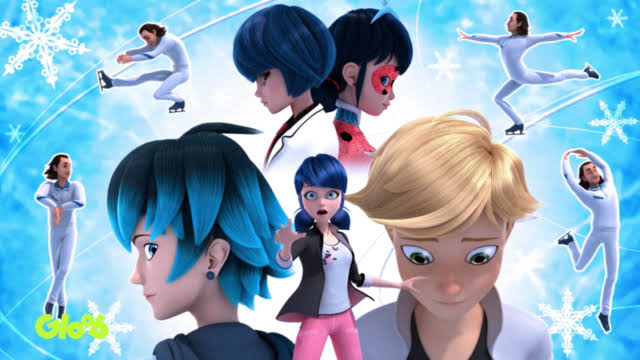

Ladybug

Marinette Dupain-Cheng is a normal girl who lives with a normal life like a teenager and as a daugther of the best baker in town she always shows passion on everything she does especially in desgining, she was chosen beacause of her willingness to help anyone who is in need, the guardian of the miraculous gave her a miraculous to use it for the greater good and now she posses "the miraculous of creation" the super power of this miraculous is the "Lucky charm" with her kwami Tikki who provides the power of the miraculous, by saying "Tikki, Spots On!!" she will be transform as a heroine called "Miraculous Ladybug"
Cat Noir

Adrien Agreste is a very Poupular man but still posses the kindness of his heart, this is one of the fact that he has been chosen by the guardian of the miraculous to own the "Miraculous of Destruction" and the kwami who provides the power of this miraculous is "Plagg" plagg is a very dangerous Kwami but a loyal friend to his Proud owner, and the Super-Power of the Miraculous is "Cataclysm"and by saying "Plagg, Claws Out!!" he give his owner a power of destruction and transform as a heroine called "Cat Noir"
Rena Rouge

Alya Cesair is a big fan of Ladybug she also made a Blog about Ladybug called "Ladyblog" everytime ther is a super-villian she is always there to capture the a shot/video on ladybug (which it is so Risky) but since Ladybug Lucky Charm lead to the Guardian of the Miraculous (it means they need an ally) that's why Ladybug chose her as a new hero to help them save Paris From Hawk Moth and she posses the Miraculous of Illusion and her kwami "Trixx" who Provides the power in the miraculous, and the Super Power of this Miraculous is "Mirage" which Grant The extreme illusion that the Heroine Desire, just by saying "Trixx, Let's Pounce" and she become a Vixen Heroine Called "Rena Rouge".
Carapace
Nino Lahiffe is a Best Friend of Adrien Agreste and Boyfriend of Alya Cesair He loves music and he always there for his Best Bud, Adrien. as Alya Cesair he is also chosen by Ladybug to become an ally He posses the Miraculous of Protection (the former owner of this miraculous is the last Guardian Of Miraculous) and the Kwami who Provide the power of Miraculous is "Wayzz" a turtle Kwami, and his Special Pawer is Shield that Looks like a Force field and could be extended if the heroine desire's to, by saying "Wayzz, Shell on!!" the kwami gives him the power of protection and became a Super Heroine called "Carapace".
Queen Bee

Chloe Bergouis is a daugther of Mayor Andrei Bergouis, Chloe Bergious is a Very rude,Brat,judgemental person. unlike any other of the heroine Chloe just found the miraculous in a chance and she used it for her own good (which it wasn't supposed to be) until ladybug took the miraculuos to her, but since his father was akumatized, Chloe was Given a Chance to use the "Miraculous of Sting" and the kwami who posses the miraculous is "Pollen" pollen is a loyal and respectful kwami to his Beloved Queen,and the Super power of this miraculous is "Venom" which make their opponent Petrified by saying "Pollen, Buzz On !!" the kwami will give her a power of sting and become a Heroine called "Queen Bee"
Spoilers Ahead
While the team of miraculous ladybug, decides what would be the next version of each character as season 3 enters with a thrill and excitement with a little twist and more on intense super villian such as Hawk Moth's Costume new version.
Season 3, 1st Episode "Chameleon"
in this episode an old Acquaintace has become a new super Villian again and this person has Been lying for all of her life more likely people adores her, but marinette and Adrien knew that she is lying she was akumatized and called as "Volpina" and the thrill in this episode will Marinette become akumatized by Hawk Moth?, is there no ladybug to save the paris again? for more info stay tune to the Disney Channel "Miraculous: Tales of Ladybug And Cat Noir" every weekday 1:00 pm to 2:00 pm
Season 3 It's "COMING"!!
"The Miraculous Phenomenon Continues" at Season three many of the fans dream come true For example "Luka" will become a super Heroine many of us dream Luka will Own the "miraculous of the snake" and miraculous fans dream that ther will be a love Triangle between Luka, Adrien, and Marinette
Luka As A New "Heroine"
on the season 3 second episode sneak peak on Instagram account Zag Heroes come up to an idea to make a new super heroine in this season which one of there is "Luka min Couffaine" we met him before in the episode Captain Hardcork as a gentleman, a musician and an expressive person through music just like quote he said "Music is more, Simpler Than Words." but they still come up on what Miraculous will he be using many of us says Snake, or Goat. and this theory was introduce in the ComicCon on Brazil having a sneak peak on the Season 3, 2nd episode.
"A love Triangle"

in this unexpected love twist that we love to see how this will grow,in this episode Adrien was developing his feelings to marinette, while Marinette has a Feeling for Luka. in this Love team we expect more Bittersweet and more Thrill especially Luka is Going to be a Miraculous Hero and we expect more things to them even behind the mask, but when will they confess thier each others feeling? does this Love Triangle last Longer than the Old Nathaniel, Marinette, And Adrien Love Triangle? to be sure stay tune on this website for more Information
New set of Kwami Inspired in Chinese Zodiac sign
in the "SandBoy " episode the new Kwami's was introduced and it was inspired in a "Chinese Zodiac Sign." such as: Dragon, Snake, Rabbit, Ox, Goat, Rooster, Monkey, Tiger, Pig, Horse, Dog,& Rat. this Kwami's Power were Still Unknown and the fact is these Kwammi will Have thier Owner soon enough those different Kwami's are adorable as the other Kwami, Many of us still Dont Knew what happen to The peafowl Miraculous. as this fan website update we provide more information as we can so stay tunned to our miraculous new upadate